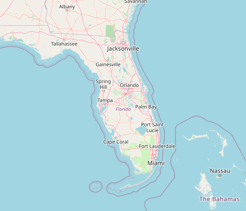

Problem solver
I enjoy problem solving and optimization. I leverage code to automate workflows and perform complex spatial analysis. My tools of the trade include ArcGIS, Python, C# and JS.
Hello this is where I have links to some projects!

Leaflet map with buttons for predetermined locations and a layer control to access different base maps.

Weather web application uses leaflet lat lon function and an api to gather local weather information.
Site selection analysis in Arcgis model builder to determine highly suitable solar farm locations in Florida.

Fun browser media player with shuffle!
About me
Work Experience
-
NV5
Geospatial Analyst
- Expand ArcGIS Pro through custom C# extensions within the .Net environment.
- Utilize Python and ArcPy skills to automate workflows increase productivity, document tool applications and limitations.
-
UDC inc.
GIS Technician I
- Coordinate with team members and off-shore partners to verify quality of 3-D rendered structural models to ensure client needs are met in a timely fashion
- Explore means of productivity enhancement though python and excel.
-
Northwest Florida Water Management District
OPS-GIS Analyst
- Assisted in the production of an extensive catalog of shapefiles that represent features of the greater Northwest Florida Area from remote sensed optical aerial imagery.
- Adapted a system that utilized Survey123 to capture real-time data in the field.
Education
-
University of South Florida
Masters level course work
- Advanced GIS – implement model builder in ArcGIS 10.8 to replicate work flows, perform raster data tasks, suitability analysis and network analysis.
- Programming for GIS utilizing python to create features and create work flows without a GUI to harness geospatial operations available in ArcPy.
-
Florida State University
Bachelor of Science in Environmental Science
- Wholistic education with courses from biology, environmental law, hydrology, GIS, and various geosciences.
- Gained practical knowledge in environmental fieldwork and environmental law including environmental resource permitting.
-
Broward College
Certification in Geographic Information Systems (GIS)
- Courses in human geography, GIS applications, 3-D rendering and remote sensing.